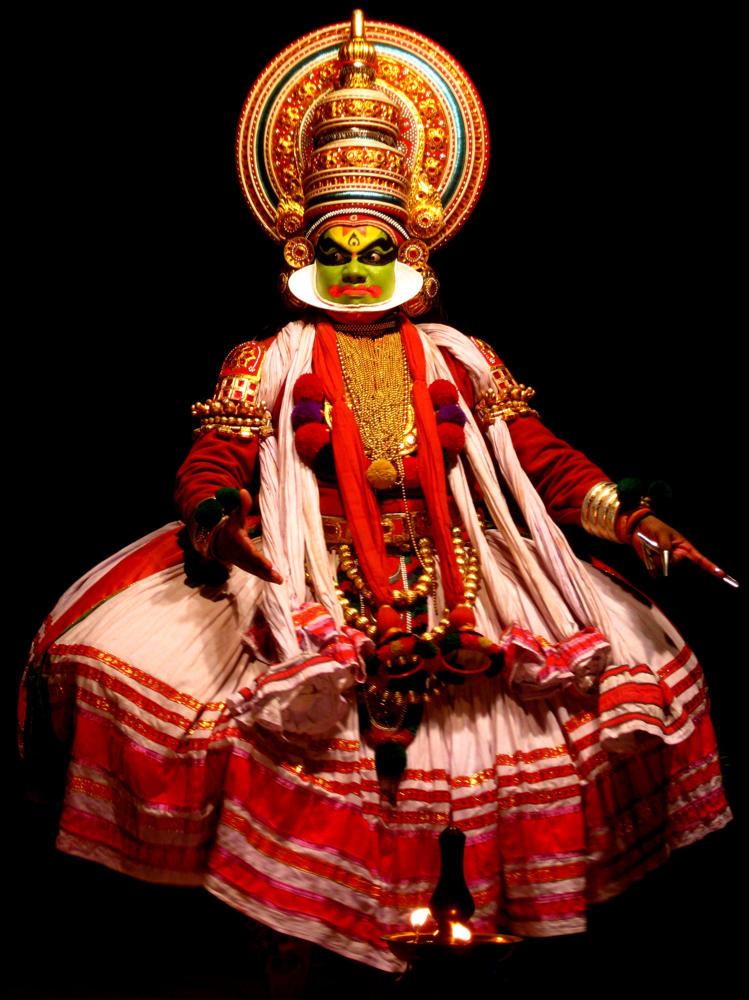
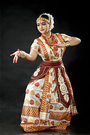
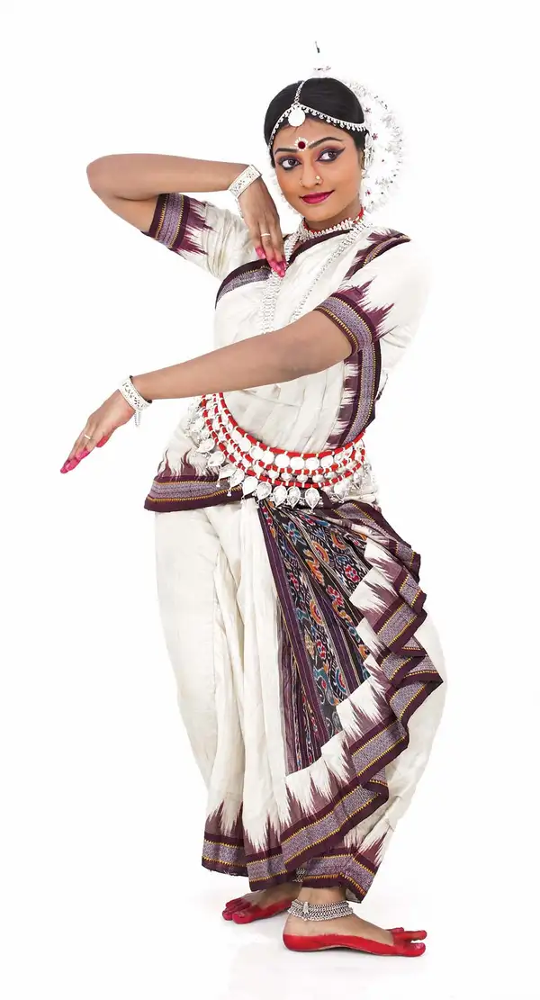
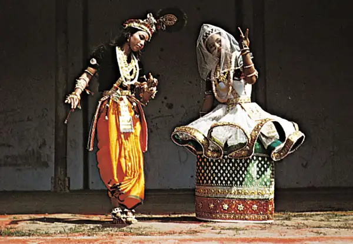
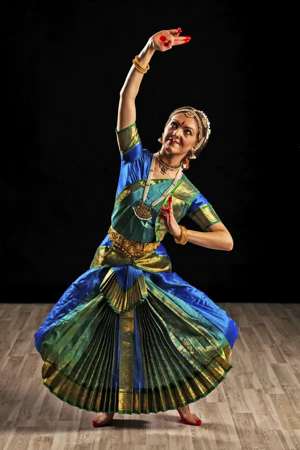

Mohiniyattam
Mohiniyattam is an evolved dance form popular in the South Indian state of Kerala.
KNOW MORE


Raas Leela
Manipuri Raas Leela dance is a unique form of dance drama which has its origin in Manipur.
KNOW MORE

Sattriya
Sattriya is a classical dance-drama performance art with origins in the Krishna-centered Vaishnavism monasteries of Assam.
KNOW MORE


Kuchipudi
Unlike the other styles mentioned, kuchipudi requires talent in both dancing and singing.
KNOW MORE

